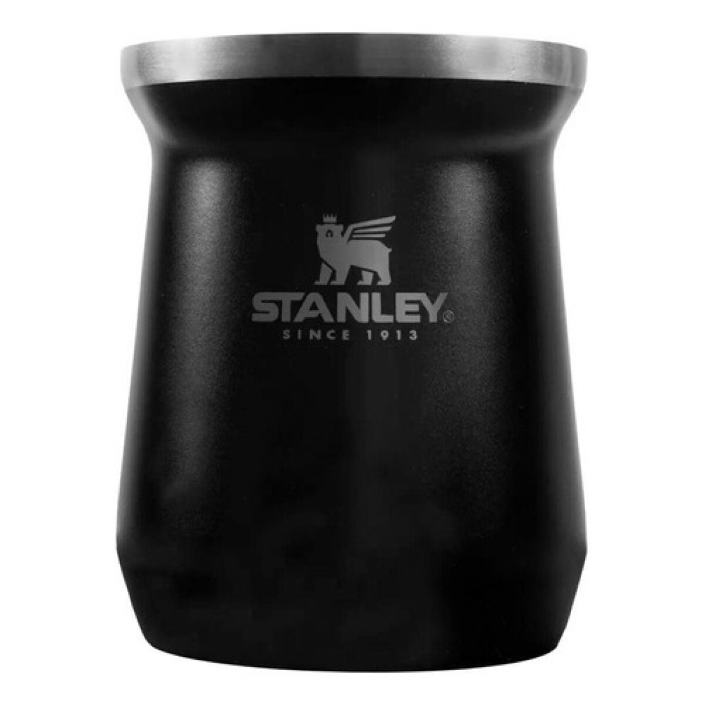
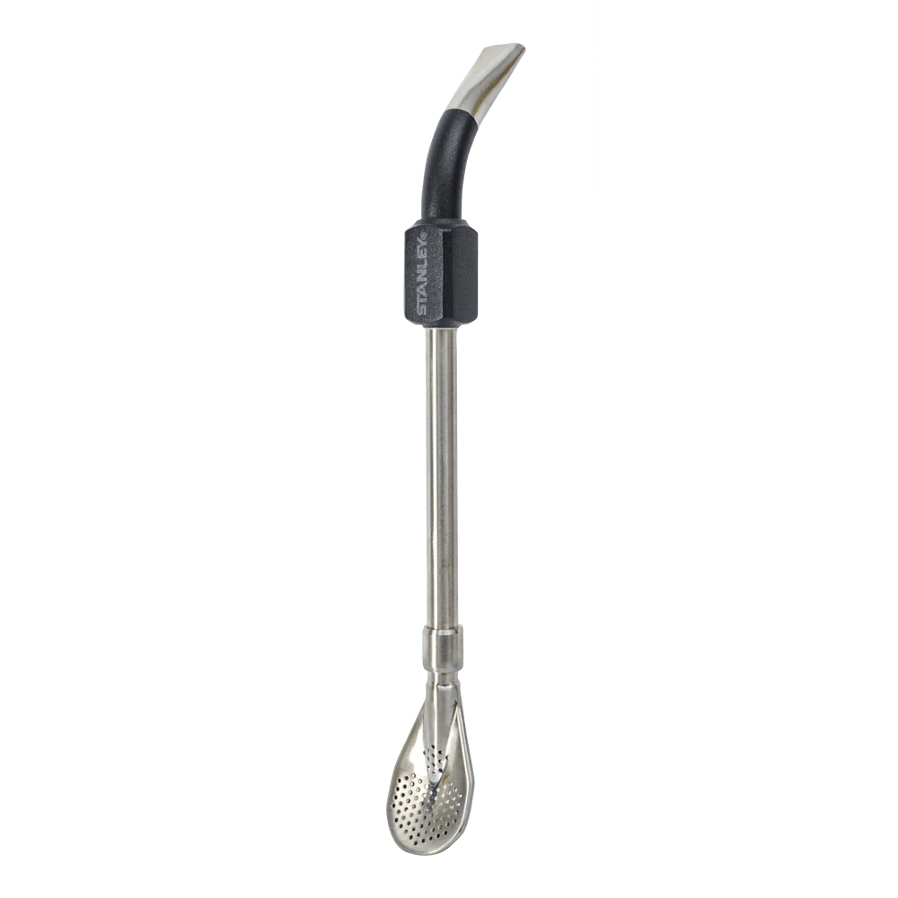
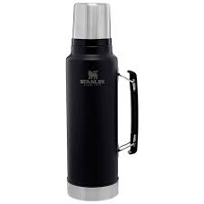

Mate Gourd (Calabash)
The classic vessel for serving mate. Traditionally made from calabash gourd, now also in wood, metal, or ceramic.
Here are the simple tools used to prepare and enjoy yerba mate every day.

The classic vessel for serving mate. Traditionally made from calabash gourd, now also in wood, metal, or ceramic.

A metal straw with a filter at the end. It allows you to sip the infusion without swallowing the yerba leaves.

Keeps the water at the right temperature—hot, but not boiling—so you can refill the gourd many times.